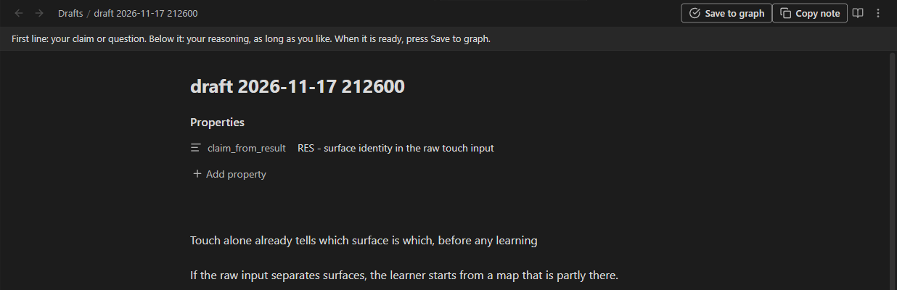
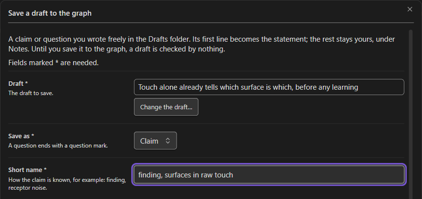
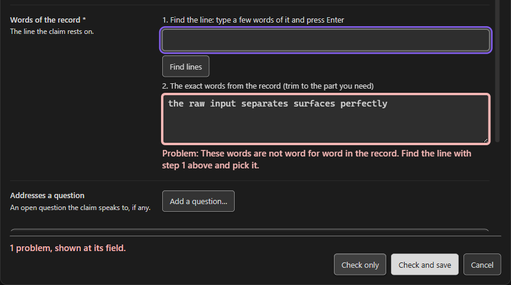
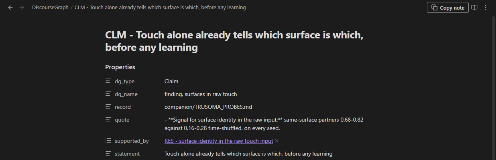

Draft a claim in a plain note. Link it to its source when it is ready.
The TruSoma vault is a research record kept in Obsidian as a discourse graph. This plugin is how a new result, claim or quoted passage gets into it. Drafting is free writing. Saving to the graph is one form that checks the entry and links it to the record it rests on.
Quoted words are checked against the record. Claims are written freely. Saving checks that a claim rests on a result and a quoted line. It does not judge whether the claim is true.
Four moments in one entry


1A draft says what it is for
A draft is a plain note that no check reads, so it never blocks anything. A line above the text explains the one rule: the first line is the claim, the rest is reasoning. The button to save it to the graph is on the note.


2The form already knows the context
The draft was started from a result, so the form opens with that result and its record file chosen. The researcher types one short name.


3A problem is shown at its field, with the way out
A quotation typed from memory is not in the record. The message sits under the field and says what to do next. The keyboard focus moves to the search box that fixes it. Nothing has been written.


4The saved note, checked and linked
The line was found in the record and picked, not retyped. The vault's full check ran before the note was kept. The claim links to its result and quotes the record word for word.
Three choices, and why
Strict where you copy, free where you judge
A reading or a quotation has a right answer, so the form checks it. A claim is a judgement, so it starts as free writing and meets the rules only when its author is ready.
The button is on the note you are looking at
A result offers "Draft a claim from this Result". A draft offers "Save to graph". A value offers "Change this value". Each opens the form with that note already chosen.
Nothing is half saved
"Check only" previews the note. A save runs the vault's whole check first. If the check fails, every file is put back exactly as it was.
Changed the same day the researcher used it
The forms were built and first used for real entries on the same day. Each change below followed something found in use.
- A new draft opens with room to write.In a narrow window the side pane took the space. A draft now opens in its own tab, the side pane gives way and the cursor is ready.
- The way in moved onto the note.Saving a draft first meant finding it in a list inside the form. Every draft, result, question, experiment and value now carries its own button.
- The "saved" message moved out of the way.It used to appear over the buttons of the note that had just opened. It now shows in the status bar.
- One press copies a whole note.Select all did not reach a note's properties. Every note now has a Copy note button.
- Plainer words.Early readers found "admit" and "mend" unclear. The button now says "Save to graph", and a problem says how to fix it.
Try it from the repository
You need Obsidian, Python, and Node with pnpm, on a desktop computer. The setup builds the plugin from source.
- Get the code and build the plugin into the vault:
git clone https://github.com/kootru-repo/trusoma-discourse-graph cd trusoma-discourse-graph/demo pnpm install cd .. python tools/dm/forms_plugin/install.py - In Obsidian choose "Open folder as vault" and pick the
vaultfolder. Accept the prompt to trust and enable its plugins. - Open the note
RES - surface identity in the raw touch inputand press "Draft a claim from this Result". A draft opens with a line that says what to write. - Write one line, press "Save to graph", type a short name and find a line of the record. Press "Check and save". The new claim opens, linked to its result, and the status bar says "Saved and checked".
The form's lists come from the vault itself, so there is nothing to configure. A first result needs no draft: the command "Enter a Result" asks for the experiment and the line of its record file.
Tested in real Obsidian, not asserted
A script drives the real Obsidian window with the keyboard alone: Tab, Enter and Ctrl+Enter reach every step in the film. It measured text contrast of 9:1 or more for labels, errors and buttons in the light and dark themes. It found no control without an accessible name and none smaller than 24 pixels. A save that fails the vault's check leaves every file unchanged, covered by 45 test cases.
The plugin is TypeScript with strict types, built and linted the way the Discourse Graphs Obsidian plugin is. It holds no rule of its own. The form and a commit run the same vault check.
Scope: desktop Obsidian. Keyboard use and contrast are measured. Speech output of screen readers is not yet tested.
TruSoma is a non-commercial research program on fetal development. The film and the stills are made by a script in the repository.